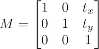
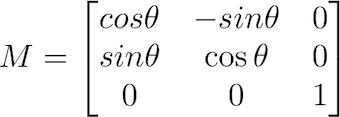
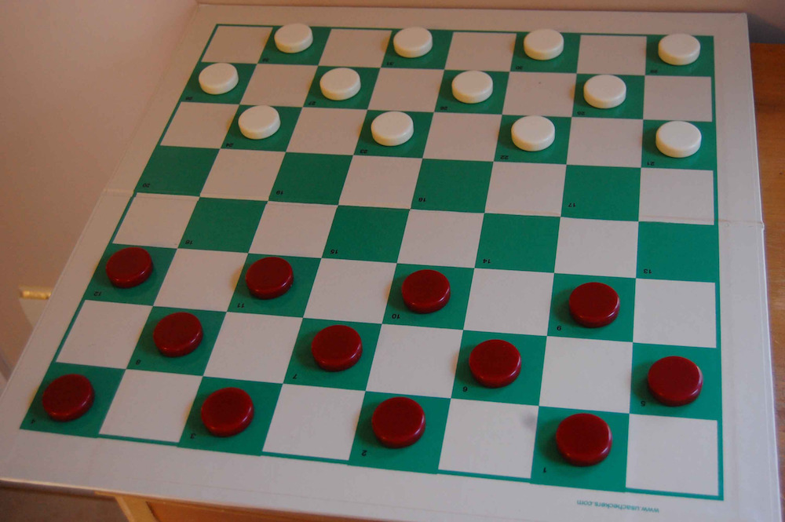
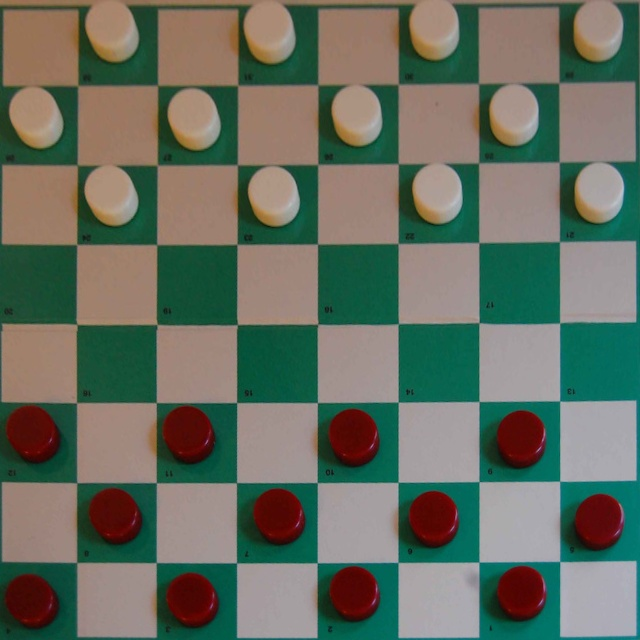
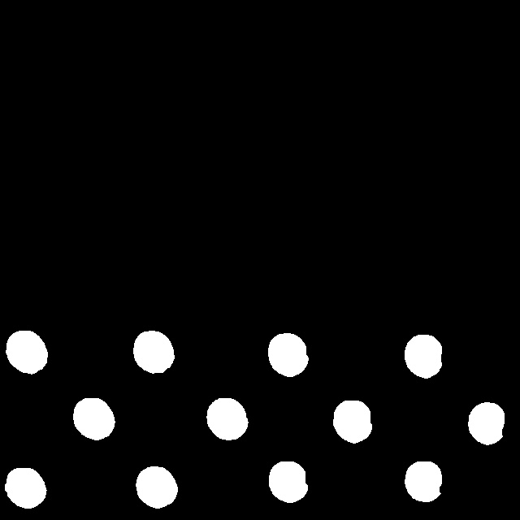

Tema 3- Procesamiento de imagen: Transformaciones¶
En este tema comenzaremos a modificar imágenes mediante transformaciones de varios tipos.
Transformaciones puntuales¶
Como hemos visto anteriormente, en OpenCV se pueden realizar operaciones directas con matrices mediante la librería numpy. Por ejemplo, podemos multiplicar por 4 todos los píxeles de una imagen esta forma:
dst = src * 4
Tal como puedes ver, en las operaciones aritméticas se pueden usar indistintamente tanto números como arrays o matrices.
Además de las operaciones aritméticas básicas (suma, resta, multiplicación y división), también podemos usar AND, OR, XOR y NOT mediante las siguientes funciones de numpy:
dst = np.bitwise_and(src1, src2)
dst = np.bitwise_or(src2, src2)
dst = np.bitwise_xor(src1, src2)
dst = np.bitwise_not(src1) # Alternativa: dst = np.invert(src1)
Por ejemplo, para invertir una imagen (transformar lo blanco a negro y lo negro a blanco) podemos usar la instrucción bitwise_not. Este método es un alias de np.invert.
Ecualizar histogramas en escala de grises es muy sencillo con la función equalizeHist:
equ = cv.equalizeHist(img)
También podemos umbralizar una imagen en escala de grises mediante la función threshold, obteniendo como resultado una imagen binaria (también llamada máscara) que puede resaltar información relevante para una tarea determinada. La umbralización consiste en poner a 0 los píxeles que tienen un valor inferior al umbral indicado y es la forma más básica de realizar segmentación (como veremos en detalle en el tema 5). Ejemplo de llamada a threshold:
# Ponemos a 0 los píxeles cuyos valores estén por debajo de 128, y a 255 los que estén por encima
th, dst = cv.threshold(src, 128, 255, cv.THRESH_BINARY)
El último parámetro es el tipo de umbralización. En OpenCV tenemos 5 tipos de umbralización que pueden consultarse aquí, aunque el valor más usado es cv.THRESH_BINARY (umbralización binaria).
Este método sólo funciona con imágenes en escala de grises. Para umbralizar imágenes en color, OpenCV ofrece la función inrange. Dada una imagen en 3 canales, esta función devuelve otra imagen de un canal con aquellos píxeles que están en un determinado rango coloreados en blanco, y los que quedan fuera del mismo en negro. Por tanto, puede usarse para realizar una segmentación básica por color, tal como veremos en detalle en el tema 5.
# Dejamos en blanco los píxeles que están entre (0,10,20) y (40,40,51)
dst = cv.inRange(src, (0, 10, 20), (40, 40, 51))
En OpenCV existen técnicas alternativas de binarización como el umbralizado adaptativo o el método de Otsu, que también veremos en el tema de segmentación porque no se pueden considerar transformaciones puntuales al tener en cuenta los valores de intensidad de los píxeles vecinos.
Ejercicio¶
Haz un programa llamado ecualizar.py que realice una ecualización de histograma, como el que hace la función equalizeHist de OpenCV, pero de forma manual. El algoritmo para ecualizar un histograma puede consultarse en las transparencias de teoría.
Para resolver este ejercicio puedes partir del siguiente esqueleto de código, completando las partes que se indican con TODO.
import cv2 as cv
import numpy as np
import argparse
from collections import Counter # Necesario para el acumulador
# Gestión de parámetros
parser = argparse.ArgumentParser(description='Programa para ecualizar un histograma (sin usar calcHist).')
parser.add_argument('--imagen', '-i', type=str, default = 'flor.jpg')
parser.add_argument('--salida', '-r', type=str, default = 'florEq.jpg')
args = parser.parse_args()
# Cargamos la imagen
img = cv.imread(args.imagen, cv.IMREAD_GRAYSCALE)
#img = np.array([52, 55, 61, 62, 59, 55, 63, 62, 55]) # Puedes descomentar esto para comprobar si el resultado es correcto usando los datos de ejemplo de teoría
# Comprobamos que la imagen se ha podido leer
if img is None:
print("No se ha podido abrir la imagen", args.imagen)
quit()
# 1- Calculamos el histograma. Para esto, en lugar de usar calcHist creamos un vector x con los
# valores únicos de los píxeles, y otro vector h con la cantidad de elementos para cada valor.
x, h = np.unique(img, return_counts=True)
# 2- Calculamos la CDF (la guardamos en c).
c = np.cumsum(h)
# 3- TODO: Ya tenemos x, h y c. Ahora debemos calcular x', que guardamos en la variable xp.
xp = None
# 4- TODO: Establecemos el nuevo valor de cada píxel (es decir, cambiamos en la imagen todos los valores x por los valores xp)
# 5- TODO: Guardamos la imagen resultante en el fichero indicado en args.salida
Usando como entrada la siguiente imagen:
La salida debería ser:
Transformaciones globales¶
Una de las transformaciones globales más usadas en imagen es la transformada de Fourier. En OpenCV tenemos la función dft que calcula esta transformada, aunque necesitamos hacer un preproceso para preparar la entrada a esta función, y un postproceso para calcular la magnitud y la fase a partir de su resultado. En Visión por Computador no entraremos en detalles sobre cómo usar la transformada de Fourier en OpenCV, pero si quieres saber más puedes consultar este enlace.
Transformaciones afines¶
En OpenCV la mayoría de transformaciones geométricas se implementan creando una matriz de transformación y aplicándola a la imagen original con warpAffine.
Esta función requiere como entrada una matriz de tamaño 2x3, ya que implementa las transformaciones afines mediante matrices aumentadas. Como hemos visto en teoría, la última fila de la matriz aumentada en una transformación afín es siempre (0,0,1) por lo que no hay que indicarla (por este motivo se indica una matriz de 2x3 en lugar de 3x3).
La función warpAffine tiene también parámetros para indicar el tipo de interpolación (flags) y el comportamiento en los bordes, tal como puede verse en su documentación.
En general, podemos usar warpAffine para implementar cualquier transformación afín. Por ejemplo, podríamos implementar la siguiente traslación...

...con este código:
import cv2 as cv
import numpy as np
img = cv.imread('lena.jpg', cv.IMREAD_GRAYSCALE)
# Valores de translación
tx = 100
ty = 50
# Definimos la matriz
M = np.float32([[1, 0, tx],
[0, 1, ty]])
# El parámetro flags puede omitirse, por defecto es INTER_LINEAR
rows, cols = img.shape
dst = cv.warpAffine(img, M, (cols, rows), flags=cv.INTER_CUBIC)
cv.imshow('traslacion', dst)
cv.waitKey(0)
Alternativamente a usar las matrices de transformación afín con warpAffine existen funciones específicas para ayudar a gestionar las transformaciones de rotación, reflexión y escalado como vamos a ver a continuación:
Rotación¶
La rotación sobre un ángulo se define con la siguiente matriz de transformación:

Sin embargo, OpenCV también permite rotar indicando un centro de rotación ajustable para poder usar cualquier punto de referencia como eje. Para esto se usa la función getRotationMatrix2D, que recibe como primer parámetro el eje de rotación:
rows, cols = img.shape
# Obtenemos la matriz de rotación con 90 grados usando como referencia el centro de la imagen
M = cv.getRotationMatrix2D((cols/2,rows/2), 90, 1) # El último parámetro (1) es la escala
dst = cv.warpAffine(img, M, (cols,rows))
Reflexión¶
Existe una función específica (flip) que implementa la reflexión sin necesidad de usar warpAffine.
flipVertical = cv.flip(img, 0)
El tercer parámetro de flip puede ser 0 (reflexión sobre el eje x), positivo (por ejemplo, 1 es reflexión sobre el eje y), o negativo (por ejemplo, -1 es sobre los dos ejes).
Escalado¶
El escalado también se implementa mediante una función específica llamada resize, que permite indicar unas dimensiones concretas o una proporción entre la imagen origen y destino.
# 1- Especificando un tamaño determinado (en este ejemplo, 20x30):
dim = (20, 30)
dst = cv.resize(src, dim, interpolation = cv.INTER_LINEAR) # El último parámetro de interpolación es opcional
# 2- Especificando una escala, por ejemplo el 75% de la imagen original:
dst = cv.resize(src, (0,0), fx=0.75, fy=0.75, cv.INTER_LINEAR) # El último parámetro de interpolación es opcional
Transformaciones proyectivas¶
Como hemos visto en teoría, la transformación proyectiva no es afín, por lo que no conserva el paralelismo de las líneas de la imagen original.
Para hacer una transformación proyectiva debemos indicar una matriz de 3x3 y usar la función warpPerspective. Por ejemplo:
# Definimos la matriz
M = np.float32([[1, 0, 0],
[0.5, 1, 0],
[0.2, 0, 1]])
# Implementamos la transformación proyectiva
rows, cols = img.shape
dst = cv.warpPerspective(img, M, (cols, rows))
La lista completa de parámetros de esta función puede verse en este enlace.
También tenemos otra opción muy práctica para implementar una transformación de este tipo, ya que suele ser muy complicado estimar a priori los valores de la matriz para realizar una transformación concreta. Esta alternativa consiste en proporcionar dos arrays de 4 puntos (siendo cada punto un vector de dos dimensiones que representa las coordenadas del mismo en el plano XY): El primero será de la imagen original, y el segundo contiene la proyección de esos puntos (dónde van a quedar finalmente) en la imagen destino. Con estos datos podemos usar getPerspectiveTransform para calcular los valores de la matriz de transformación.
# Los dos parámetros que recibe getPerspectiveTransform deben ser arrays de puntos, y cada punto es un array de dos elementos float.
M = cv.getPerspectiveTransform(input_pts, output_pts)
# Aplicamos la transformacion usando interpolación lineal. Los valores widthDst y heightDst indican el tamaño de la imagen destino.
dst = cv.warpPerspective(src, M, (widthDst, heightDst), flags=cv.INTER_LINEAR)
Siendo un ejemplo de vector input_pts el que sigue:
input_pts = np.float32([[120, 13], [610, 24], [2, 491], [622, 500]])
Transformaciones en entorno de vecindad¶
En esta sección veremos cómo implementar transformaciones en entorno de vecindad usando OpenCV, en particular convoluciones y filtros de mediana.
Filtros de convolución¶
Las convoluciones se implementan con la función filter2D.

Esta función recibe los siguientes parámetros:
src: Imagen de entradaddepth: Resolución radiométrica (depth) de la matrizdst. Un valor negativo indica que la resolución es la misma que tiene la imagen de entrada.kernel: El kernel a convolucionar con la imagen.anchor(opcional): La posición de anclaje del kernel (como puede verse en la figura) relativa a su origen. El punto (-1,-1) indica el centro del kernel (es el valor por defecto).delta(opcional): Un valor para añadir a cada píxel durante la convolución. Por defecto, 0.borderType(opcional): El método a seguir en los bordes de la imagen para interpolación, ya que en estos puntos el filtro se sale de la imagen. Puede sercv.BORDER_REPLICATE,cv.BORDER_REFLECT,cv.BORDER_REFLECT_101,cv.BORDER_WRAP,cv.BORDER_CONSTANT, ocv.BORDER_DEFAULT(que es el valor por defecto).
Ejemplos de llamadas a esta función:
# Esta forma es la más habitual
dst = cv.filter2D(src, -1, kernel)
# Indicando qué hacer en los bordes
dst = cv.filter2D(src, -1, kernel, borderType=cv.BORDER_CONSTANT)
Evidentemente hay que crear antes un kernel para convolucionarlo con la imagen. Por ejemplo, podría ser el siguiente:
kernel = numpy.array([[-1, -1, -1, -1, -1],
[-1, -1, -1, -1, -1],
[-1, -1, 24, -1, -1],
[-1, -1, -1, -1, -1],
[-1, -1, -1, -1, -1]])
Pregunta: ¿Qué tipo de filtro acabamos de crear?
Filtro de mediana¶
El filtro de mediana se implementa de forma muy sencilla en OpenCV:
dst = cv.medianBlur(src, 5)
El último parámetro indica el tamaño del kernel, que siempre será cuadrado (en este ejemplo, 5x5 píxeles).
Transformaciones morfológicas¶
OpenCV proporciona una serie de funciones predefinidas para realizar transformaciones morfológicas.
Erosión y dilatación¶
La sintaxis de estas operaciones morfológicas básicas es sencilla:
dst = cv.erode(src, element)
dst = cv.dilate(src, element)
Ambas funciones necesitan un elemento estructurante, llamado element en el código anterior. Al igual que en el caso de filter2D se pueden añadir opcionalmente los parámetros anchor, delta y borderType.
Para crear el elemento estructurante se usa la función getStructuringElement:
# Forma del filtro
erosion_type = cv.MORPH_ELLIPSE
# El último parámetro es el tamaño del filtro, en este caso 5x5
element = cv.getStructuringElement(erosion_type, (5,5))
El elemento estructurante puede tener forma de caja (MORPH_RECT), de cruz (MORPH_CROSS) o de elipse (MORPH_ELLIPSE).
Apertura, cierre y Top-Hat¶
El resto de funciones de transformación morfológica se implementan mediante la función morphologyEx. Por ejemplo:
dst = cv.morphologyEx(src, cv.MORPH_OPEN, element)
Esta función se invoca con los mismos parámetros que erode o dilate añadiendo el parámetro que indica el tipo de operación:
- Apertura:
MORPH_OPEN - Cierre:
MORPH_CLOSE - Gradiente:
MORPH_GRADIENT - White Top Hat:
MORPH_TOPHAT - Black Top Hat:
MORPH_BLACKHAT
En este enlace puedes ver código de ejemplo para implementar un interfaz que permite probar estas operaciones modificando sus parámetros.
Ejercicio¶
Implementa un programa llamado detectarFichas.py que cargue la siguiente imagen damas.jpg, corrija la perspectiva del tablero y detecte las fichas blancas y rojas.

Los parámetros del programa deben ser los siguientes:
parser = argparse.ArgumentParser(description='Programa para obtener la posición de las damas')
parser.add_argument('--imagen', '-i', type=str, default = 'damas.jpg')
parser.add_argument('--salidaPerspectiva', '-p', type=str, default = 'corrected.jpg')
parser.add_argument('--salidaRojas', '-r', type=str, default = 'rojas.jpg')
parser.add_argument('--salidaBlancas', '-b', type=str, default = 'blancas.jpg')
Primero vamos a corregir la perspectiva. Para esto se proporcionan los 4 puntos de las esquinas del tablero en la imagen original:
278, 27 # Esquina superior izquierda
910, 44 # Esquina superior derecha
27, 546 # Esquina inferior izquierda
921, 638 # Esquina inferior derecha
El programa debe aplicar una transformación proyectiva y guardar el resultado en otra imagen de tamaño 640x640 píxeles cuyo nombre se ha pasado por parámetro (por defecto, corrected.jpg). La imagen resultado debería ser como la siguiente:

A continuación se detallan los pasos para obtener las fichas rojas y blancas a partir de esta imagen.
Fichas rojas¶
A continuación se muestra el resultado de detectar las fichas rojas:

Para realizar esta detección el programa debe seguir los siguientes pasos:
- Realizar una umbralización quedándonos sólo con los píxeles que tengan un color dentro de un rango BGR entre (0,0,50) y (40,30,255). Podemos visualizar el resultado con
imshow. Deberíamos tener los píxeles de las fichas rojas resaltados, aunque la detección es todavía imperfecta y existen huecos. - Crear un elemento estructurante circular de tamaño 10x10 píxeles y aplicar un operador de cierre para perfilar mejor los contornos de las fichas y eliminar estos huecos.
- Guardar la imagen resultante en el fichero pasado por parámetro (por defecto,
rojas.jpg). Debería dar el mismo resultado que se muestra en la imagen anterior.
Fichas blancas¶
- Ahora debes intentar resaltar sólo las fichas blancas lo mejor que puedas, guardando el resultado en el fichero
blancas.jpg. Para esto puedes usar filtrado de color (en cualquier espacio, como HSV) y realizar transformaciones morfológicas o de cualquier otro tipo. Probablemente no te salga demasiado bien pero es un problema mucho más complicado que la detección de las fichas rojas al confundirse el color de las damas con el de las casillas blancas.